Read-aloud visit
One story, a value talk and a coloring page.
Fee (CAD)[fee – pending]
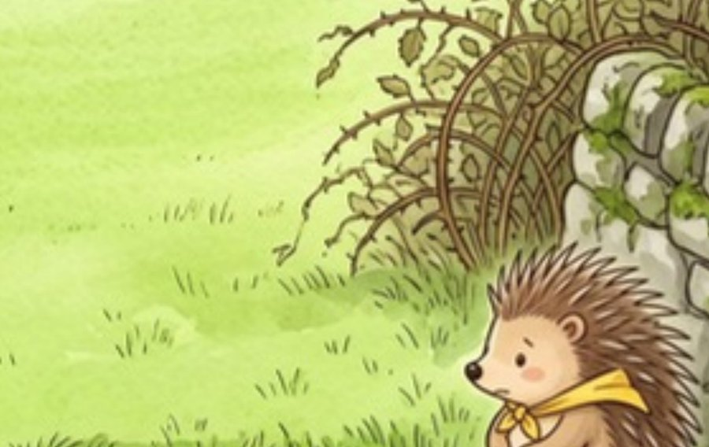
For kindergarten to grade 2, libraries and EarlyON centres. One story, one value and something to take home.
One story, a value talk and a coloring page.
Fee (CAD)[fee – pending]
One story, an activity from the SEL pack and a take-home sheet.
Fee (CAD)[fee – pending]
A live read-aloud on video, with questions.
Fee (CAD)[fee – pending]
First visit for Kingston-area schools and libraries: [terms – pending]
Full mapping for all 21 books: doubleadventure.ca/educators/sel-mapping
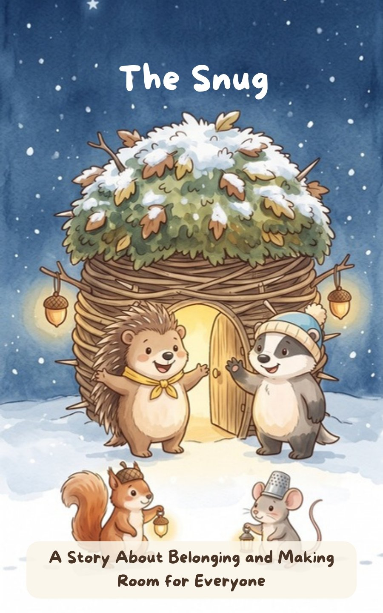
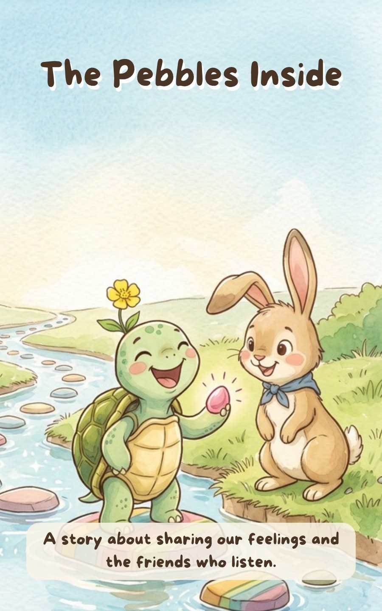
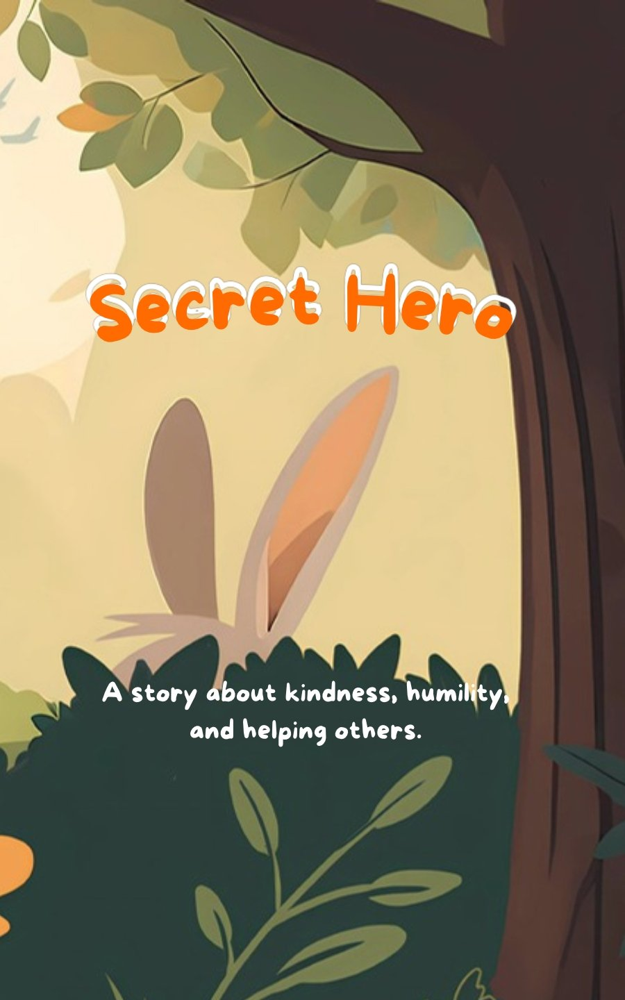
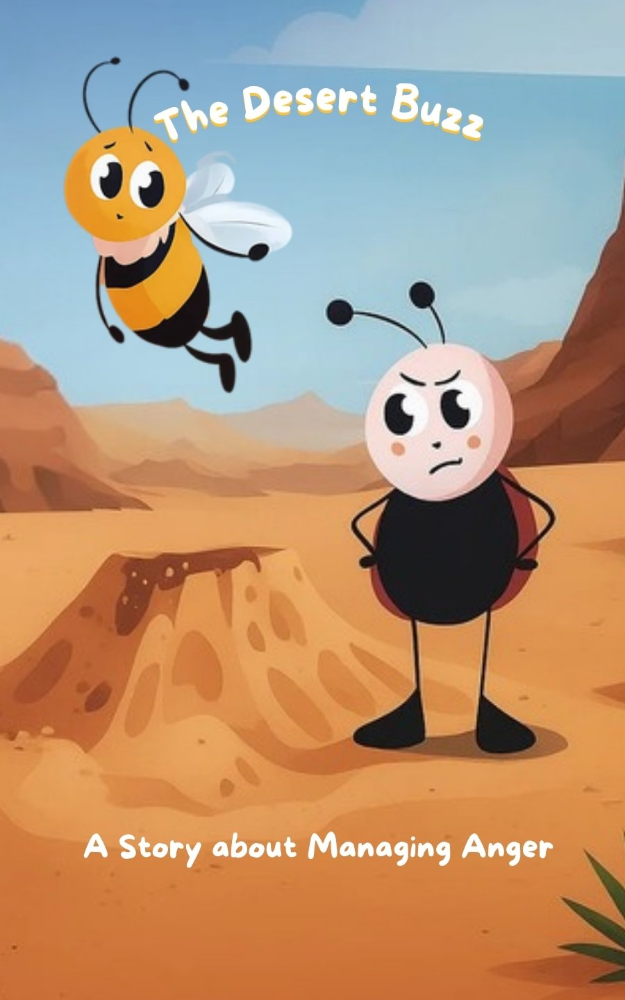
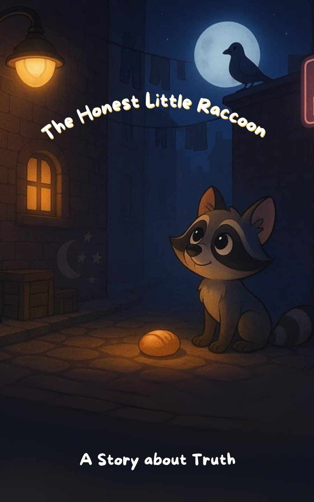
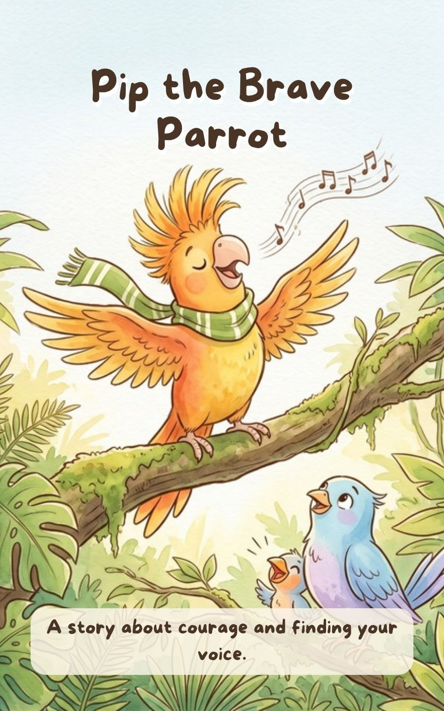
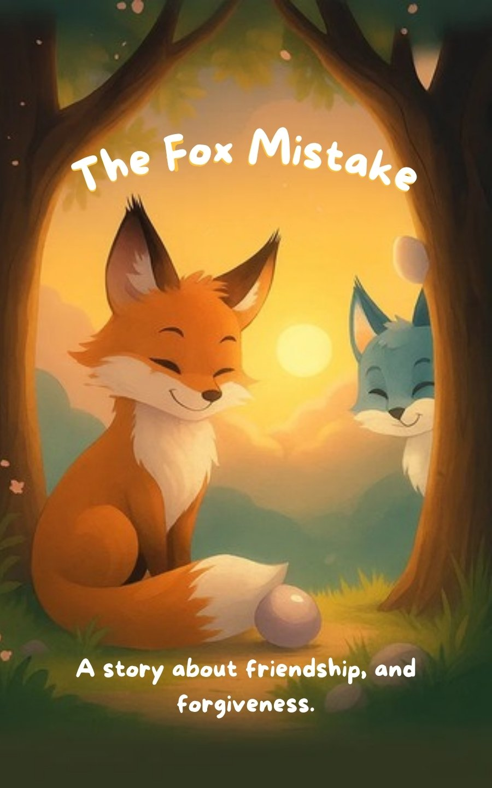
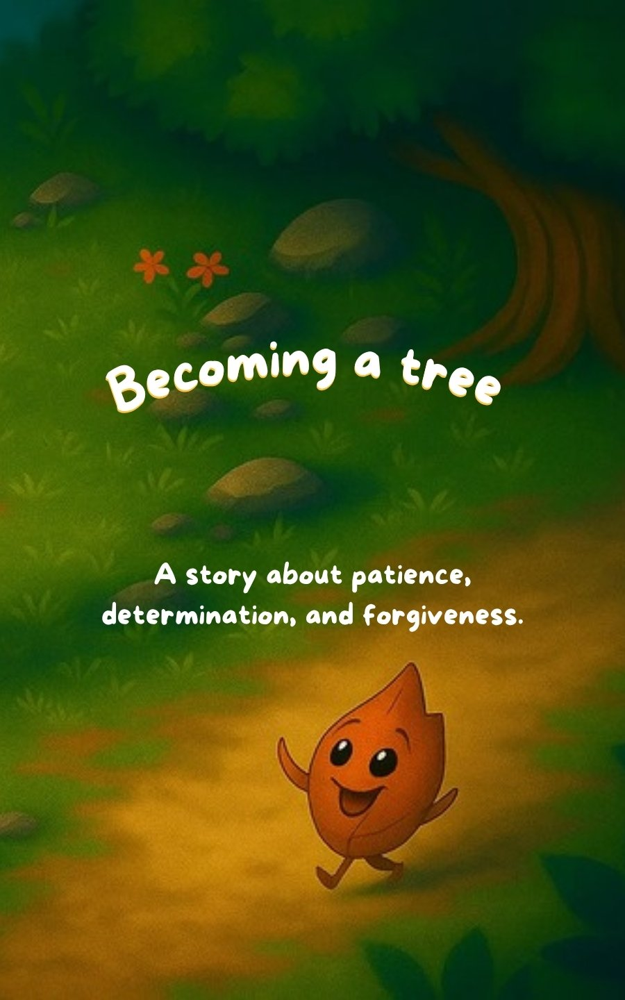
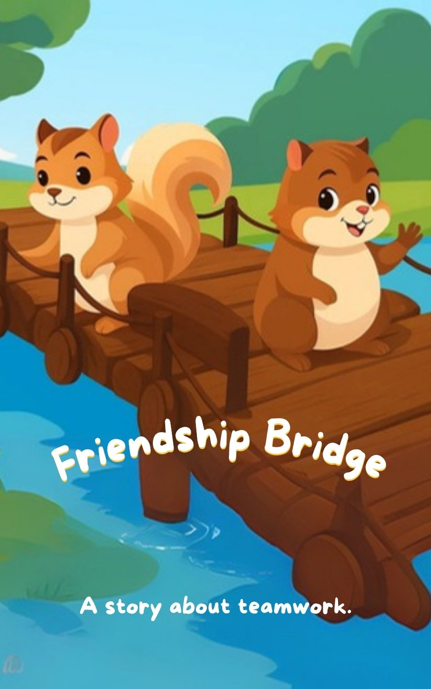
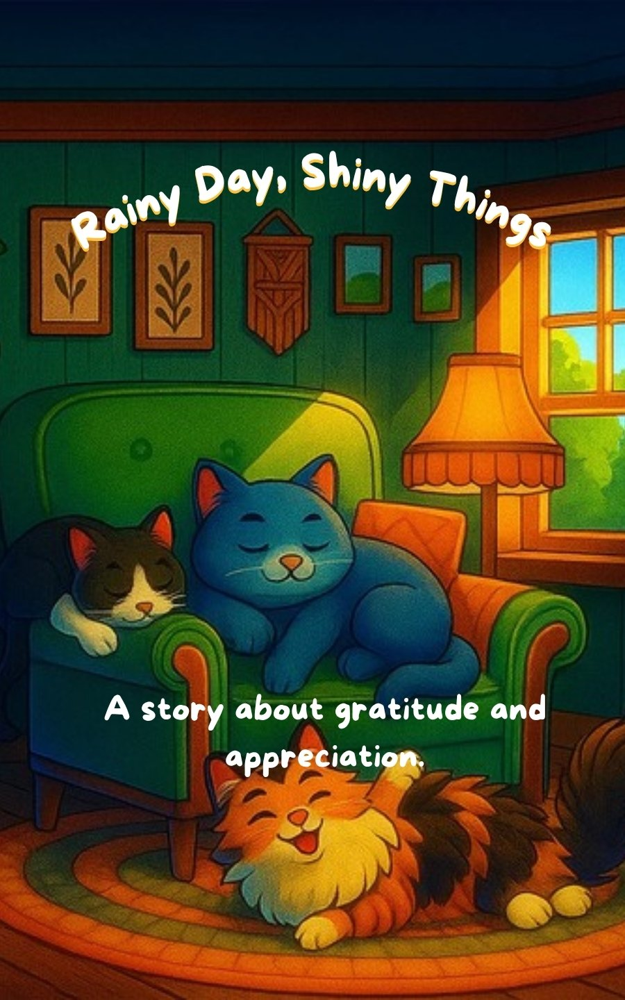
Each book carries one value from a different culture. Five languages to start: English, French, Spanish, German and Italian.
| Travel | In-person visits from Seeley's Bay, near Kingston. Distance we travel: [terms – pending] |
|---|---|
| We bring | The books and printed sheets. A screen helps for the virtual format. |
| Police check | For school visits, status: [status – pending] |
Scan the code or email us with your school, grade, dates and number of children. We reply within 2 business days.
ceo@doubleadventure.ca